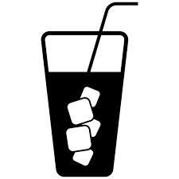

Refrescos del norte
Una bebida carbonatada, denominada gaseosa, refresco, fresco o soda, dependiendo del país, es una bebida saborizada, hecha con agua carbonatada, edulcorantes naturales como fructosa o sacarosa, o sintéticos como el ciclamato (E952), acidulantes, colorantes, antioxidantes, estabilizadores de acidez y conservadores. Estas bebidas suelen consumirse frías, para ser más refrescantes. Se ofrecen diversos sabores de gaseosas, entre otros cola, naranja, lima limón, uva, cereza y ponche. En algunos países se llama gaseosa o soda a un tipo específico de estas bebidas carbonatadas, que es incolora y sin más saborizante que el azúcar o edulcorante. En Argentina, Perú y Colombia,1 se lo conoce como gaseosa. En Uruguay, Perú, Guatemala, El Salvador, Honduras y Nicaragua se le llama refresco a una bebida de jugo de frutas. En Chile, se les nombra exclusivamente bebida, en desprecio de otros líquidos como las aguas, los jugos o los alcoholes bebestibles